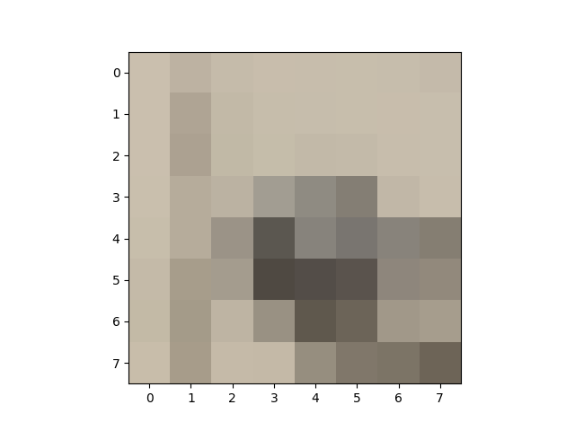
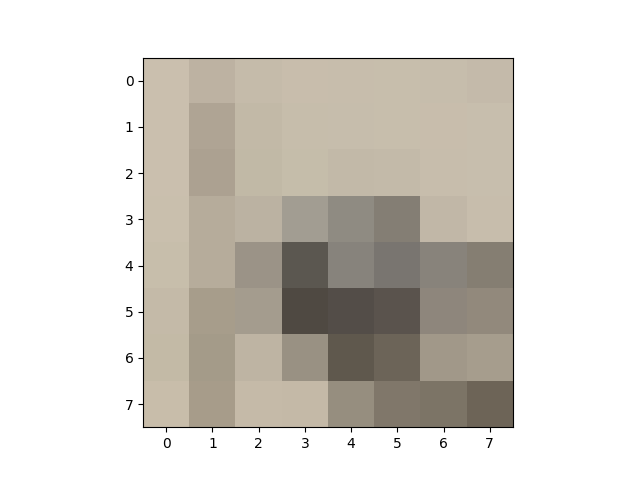
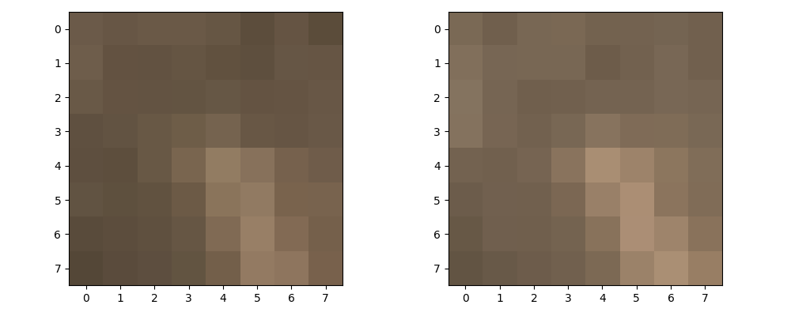
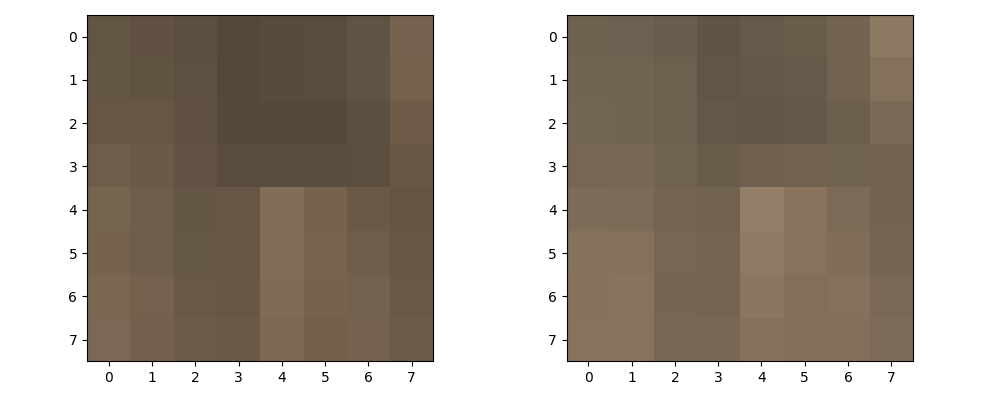
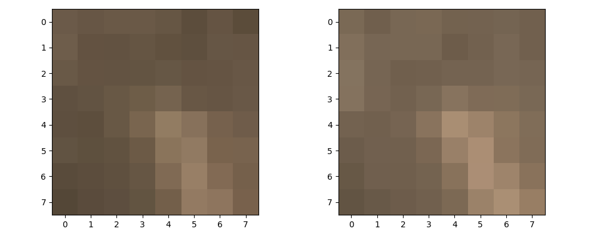
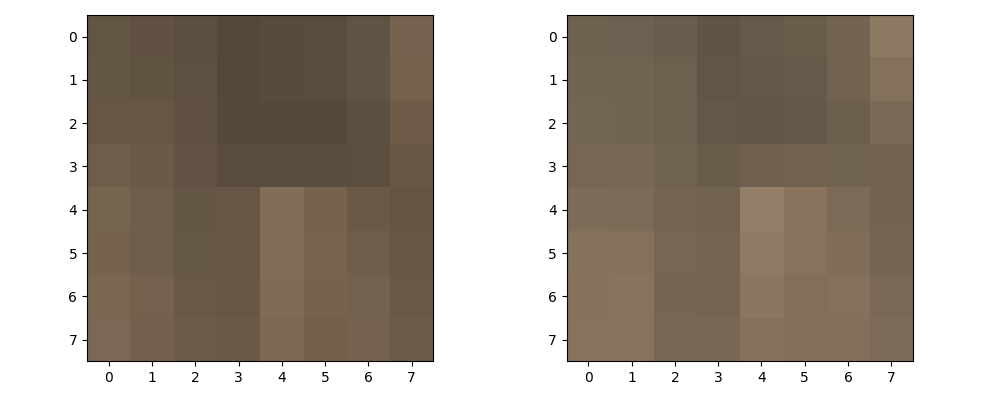

Introduction
The first part of this project explores how to warp and stitch images together into mosaics using manually labeled correspondence points. This same warping operation can also be used rectify images and fit them to different perspectives. The second part of this project focuses on how to stitch images together into mosaics using correspondence points that are automatically identified, filtered, and matched.
Part A: Shoot the Pictures
Approach
Since I did not have a tripod, I balanced my phone on top of my water bottle and turned the water bottle to simulate a tripod. Long-pressing the screen locked the exposure and focus of the camera, which allowed me to take far more consistent photos and stitch more convincing mosaics.
Failures
At first, I took pictures by holding my phone in front of me and turning my body. While this was still fine for aligning objects far away, the non-zero turn radius meant that the perspectives did not share a common center, and this error was amplified for nearby objects, such as the tree in the mosaic below. The error made aligning these closer objects while keeping the distant objects aligned impossible:
Part A: Recover Homographies
Approach
I used the same correspondence tool used in Project 3 to label matching features between each pair of images in the mosaic. After obtaining the correspondences src_pts for the source image and trg_pts for the target image, I used the SVD approach described in this paper to calculate the homography matrix. For each pair of correspondence points (x1, y1) and (x2, y2), two vectors are created following the formula below:

These two vectors are derived from eliminating the scale factor w' in the target homogenous coordinates. Afterwards, these vectors are stacked into a matrix A, which is then passed through np.linalg.svd to obtain S, U, and Vt. The last row v of Vt (last column of V) corresponds with the smallest singular value and is taken to be the elements of the flattened homography matrix. Lastly, v is reshaped into a 3x3 matrix H and each of its elements is divided by the bottom-right-most element to unscale the transform.
Part A: Warp the Images
Approach
For each pair of images, after calculating the homography matrix H, the correspondences in the source image src_img are warped to fit those of the target image trg_img using a similar approach to the one used in Project 3. First, the points of bounding box src_bounds represented by the four corners of the image are stacked row-by-row into a matrix of homogeneous coordinates. These bounds are then warped to the bounds of the resulting image by applying the homography matrix like so: trg_bounds = src_bounds @ H. Next, skimage.draw.polygon is used to list all pixel locations trg_pts in the quadrilateral bounded by trg_bounds. For each pixel in trg_pts, the inverse transform H_inv = np.linalg.inv(H) is applied by doing inv_pts = trg_pts @ H_inv. At each point in inv_pts, the neighboring pixel values in the original image src_img are sampled using bilinear interpolation to produce the final pixel value at that pixel in the warped image.
Rectifying Images
In order to rectify an image, four correspondences src_pts on a rectangular object were marked on the input image, and the target correspondences trg_pts were manually determined to form a rectangle in the center of the final rectified image. The warping algorithm described above is then used to warp the input image such that the face of the rectangular object is directly facing the camera.
| Original | Rectified |
|---|---|

|

|

|
Part A: Blend the Images into Mosaics
Approach
In order to produce a mosaic, the images in the mosaic were first organized into a tree such that image A is the parent of B if the correspondences in image B needs to be warped to fit image A. The correspondence points generated from the correspondence tool represents a directed edge from B to A. The root node is the unwarped reference image at the center of the mosaic. The images and correspondence points are loaded while building the tree, and for each node n, the "delta" homography matrix delta_H is computed by using its own correspondence points n.pts and its parents correspondence points n.parent.pts. Then, its final homography matrix n.H is computed by multiplying n.parent.H @ delta_H. This chaining of homography matrices allows the mosaicing of images that are not directly linked by correspondence points. When rendering the mosaic, the nodes in the mosaic tree are processed in BFS order starting at the root so that images towards the edges of the mosaic are overlayed on top of those near the center.
After warping an image to its final orientation within the mosaic, it is blended with the rest of the mosaic using the same Laplacian and Gaussian stack used in Project 2. The irregular mask used in the blend is derived from the final shape of the warped image and the blend is performed with num_levels=2 and kernel_size=25 with sigma scaled accordingly.
Shortcomings
While the tree approach to mosaicing sounds good in theory, floating point error and rounding to discrete pixel positions causes error to accumulate. This results in the images further out near the edges of the mosaic to fall slightly out of alignment, even though their pair-wise alignments were verified to be correct. This is something I want to look into further in Part B of this project, but due to time constraints, I am sticking with mosaics of at most 3 images for now.
University Hall
| Root Image | Right Leaf |
|---|---|

|

|
| Mosaic |
|---|

|
Home
| Left Leaf | Root Image |
|---|---|

|

|
| Mosaic |
|---|
Bangkok Noodles & Thai BBQ
| Left Leaf | Root Image | Right Leaf |
|---|---|---|

|

|

|
| Mosaic |
|---|
Part B: Detecting Corners
Approach
First, all corners in the image are detected using the Harris corner detection algorithm, and the scores h for each pixel in the image is retrieved using get_harris_corners(). The scores for each corner are extracted into a vector scores = h[corners[:, 0], corners[:, 1]]. Adaptive Non-Maximal Suppression (ANMS) is then used to identify the strongest corners in the image while still keeping the points spread out relatively evenly across the image. To perform ANMS, the parwise distances dists are calculated using dist2(). Numpy broadcasting is then used to determine whether f(x_i) < c_robust * f(x_j) holds true for each pair of corners, resulting in a mask larger_mask = scores[:, np.newaxis] < (c_robust * scores[np.newaxis, :]). Then, dists is masked using this mask to produce masked_dists = dists * larger_mask, and the distances between pairs of corners that do not satisfy the inequality above are set to infinity so that they do not take part in the upcoming minimization. This way, the minimum radii for each point can be calculated using radii = np.min(masked_dists, axis=1). Next, the indices of each point are sorted in order of decreasing radii using sorted_indices = (-radii).argsort(). Finally, these indices are used to sort the original list of corners using sorted_corners = corners[sorted_indices] and the best corners are returned using points = sorted_corners[:num_corners].
Results
| All Corners | ANMS Corners |
|---|---|
Part B: Extracting Feature Descriptors
Approach
For each corner in points obtained from ANMS, a 40x40 region feature around the given point is sliced from the original color image, which is then resized to 8x8 using skimage.transform.resize. The feature is then normalized by subtracting the mean and dividing by the standard deviation for each of the three channels. Lastly it is flattened and stacked into a Nx192 matrix with each row being a flattened feature descriptor. This is performed for each image in the pair to produce features1 and features2.
Results
Here are some examples of the extracted 8x8 feature descriptors:
 


Part B: Matching Feature Descriptors
Approach
The pairwise differences between each flattened feature descriptor is calculated using diff = features1[:, np.newaxis, :] - features2[np.newaxis, :, :], and the pairwise sum-squared differences (SSD) are calculated by summing over the last dimension of size 192 using ssd = np.sum(diff ** 2, axis=-1). The nearest-neighbor distances are then sorted within each row (representing a feature of interest in the first image) from smallest distance to largest. The Lowe score for each feature is calculated using the 1-NN and 2-NN distances in ssd through lowe = nn_dists[:, 0] / nn_dists[:, 1]. All features with a Lowe score lower than the threshold is extracted using the mask lowe_mask = lowe < lowe_threshold, which will be used to filter the matches at the end. The indices of the closest nearest neighbor for each feature is retrieved using closest = ssd.argsort()[:, 0]. These indices are then paired with the indices of the first image's features using matches = np.stack([np.arange(0, closest.shape[0]), closest]).T. Lastly, the pairings are filtered using the mask from before: matches[lowe_mask].
Results
Here are some examples of matches between feature descriptors:
 



This matching process resulted in the following correspondences, which were obtained by indexing into the original list of detected points using corr1 = points1[matches[:, 0]] and corr2 = points2[matches[:, 1]].
Part B: Random Sample Consensus (RANSAC)
Approach
RANSAC is implemented and used in the Mosaic class from Part A of this project. Given a set of src_pts and trg_pts, during each iteration of the algorithm, the indices of four points from src_pts are sampled without replacement using indices = np.random.choice(src_pts.shape[0], size=4, replace=False) and the points are retrieved through indexing using src_sample = src_pts[indices, :] and trg_sample = trg_pts[indices, :]. Using these samples, the homography is calculated exactly like in Part A using h = compute_homography(src_sample, trg_sample). Then, all the source points are transformed using transformed_pts = src_pts @ h and unscaled. The Euclidean distance between the transformed points and the ground truth targets are calculated using dists = np.sqrt(np.sum((transformed_pts - trg_pts) ** 2, axis=-1)). Lastly, all points that land within a given threshold of their targets are extracted using a mask mask = (dists < threshold). The number of points that are under the threshold is counted by summing the mask. If that count is larger than the size of the current largest set of points, update the largest set of points to be best_src = src_pts[mask] and best_trg = trg_pts[mask]. After all the iterations, best_src and best_trg are returned. These points are then passed into the compute_homography function from Part A to calculate the homography matrix.
Results
The RANSAC inliers for each pair of correspondences are shown below:

Part B: Autostitching Mosaics
Approach
The automatically generated correspondences are stored in the same JSON file format used by Mosaic from Part A, and the code is run as-is with the exception that the homographies are now calculated using RANSAC.
Results
Overall, the autostitching performed almost as well on the mosaics from Part A. The autostitched mosaics were a couple pixels more inaccurate than my manually labeled correspondences, but this is most likely due to the fact that I took the time to iteratively choose manual correspondences to get the best alignment I could. Another factor is that, with autostitching, the user has little control over the features it chooses. This is evident in how the roof of University Hall is slightly misaligned in the autostitched mosaic. Additionally, the two chairs in the middle of the autostitched restaurant mosaic are slightly misaligned and so is the far wall.
Interestingly, the autostitched mosaic of my living room was slightly better than the manual version. The floorboards near the center of the mosaic are aligned more accurately in the autostitched version, which makes sense because I had trouble manually finding the right corners on the floor to align the patterns in the floorboards, whereas it is probably easier for the algorithm to find more accurate matches between the irregular patterns.
| Manual | Autostitched |
|---|---|

|
|

|
|

|
Reflection
Visualizing how the forward and inverse homography matrices transform the input was tricky but fun, and it was interesting to learn that homography matrices can be chained together to link images that do not share any correspondences at all. The feature descriptor matching was really interesting. Implementing the pairwise SSD using broadcasting instead of loops was a fun challenge. It was also interesting visualizing the final features that the algorithm chose, since for the most part, they weren't the features that I initially focused on.